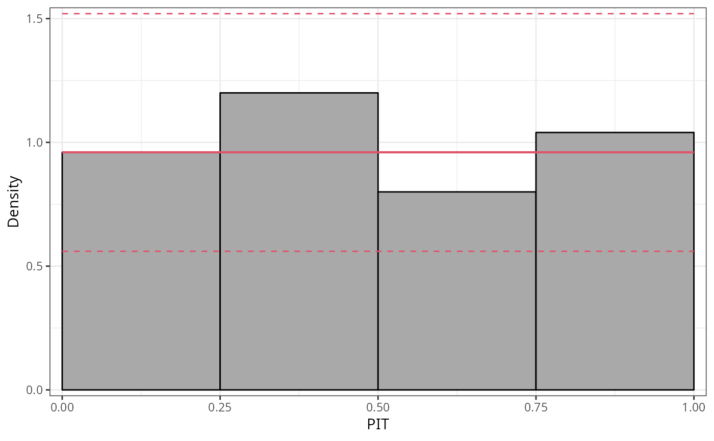
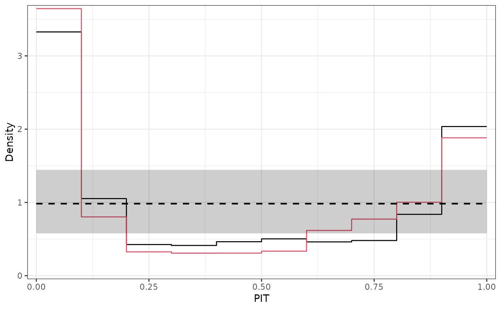

pithist.RdPIT histograms graphically compare empirical probabilities from fitted models
with a uniform distribution. If plot = TRUE, the resulting object of
class "pithist" is plotted by plot.pithist or
autoplot.pithist before it is returned, depending on whether the
package ggplot2 is loaded.
pithist(object, ...) # S3 method for default pithist( object, newdata = NULL, plot = TRUE, class = NULL, style = c("histogram", "lines"), type = c("random", "proportional"), nsim = 1L, delta = NULL, freq = FALSE, breaks = NULL, confint = TRUE, confint_level = 0.95, confint_type = c("exact", "approximation"), single_graph = FALSE, xlim = c(0, 1), ylim = c(0, NA), xlab = "PIT", ylab = if (freq) "Frequency" else "Density", main = NULL, ... )
| object | an object from which probability integral transforms can be
extracted using the generic function |
|---|---|
| ... | further graphical parameters. |
| newdata | optionally, a data frame in which to look for variables with which to predict. If omitted, the original observations are used. |
| plot | Should the |
| class | Should the invisible return value be either a |
| style | character specifying the style of pithist. For |
| type | character. In case of discrete distributions should the PITs be
drawn randomly from the corresponding interval or distributed
proportionally? This argument is not fully supported yet, please keep to the default
|
| nsim | integer. If |
| delta | numeric. The minimal difference to compute the range of
proabilities corresponding to each observation according to get (randomized)
quantile residuals. For |
| freq | logical. If |
| breaks | numeric. Breaks for the histogram intervals. |
| confint | logical. Should confident intervals be drawn? |
| confint_level | numeric. The confidence level required. |
| confint_type | character. Which type of confidence interval should be plotted. According to Agresti and Coull (1998), for interval estimation of binomial proportions an approximation can be better than exact. |
| single_graph | logical. Should all computed extended reliability
diagrams be plotted in a single graph? If yes, |
| xlim, ylim, xlab, ylab, main | graphical parameters handed passed to
|
An object of class "pithist" inheriting from
"data.frame" or "tibble" conditional on the argument class
with the following variables:
histogram interval midpoints on the x-axis,
bottom coordinate of the histogram bars,
widths of the histogram bars,
lower and upper confidence interval bound,
y-coordinates of the reference curve.
PIT histograms graphically evaluate the probability integral transform (PIT),
i.e., the value that the predictive CDF attains at the observation, with a
uniform distribution. For a well calibrated model fit, the observation will be
drawn from the predictive distribution and the PIT will have a standard uniform
distribution. For computation, pithist leverages the function
qresiduals employing the procast generic and then
essentially draws a hist.
In case of discrete distributions the PIT can be either drawn randomly from the corresponding interval or distributed proportionally in the histogram, whereby the latter is not yet supported.
In addition to the plot and autoplot method for
pithist objects, it is also possible to combine two (or more) PIT histograms by
c/rbind, which creates a set of PIT histograms that can then be
plotted in one go.
Agresti A, Coull AB (1998). “Approximate is Better than ``Exact'' for Interval Estimation of Binomial Proportions.” The American Statistician, 52(2), 119--126. doi: 10.1080/00031305.1998.10480550
Czado C, Gneiting T, Held L (2009). “Predictive Model Assessment for Count Data.” Biometrics, 65(4), 1254--1261. doi: 10.2307/2981683
Dawid AP (1984). “Present Position and Potential Developments: Some Personal Views: Statistical Theory: The Prequential Approach”, Journal of the Royal Statistical Society: Series A (General), 147(2), 278--292. doi: 10.2307/2981683
Diebold FX, Gunther TA, Tay AS (1998). “Evaluating Density Forecasts with Applications to Financial Risk Management”. International Economic Review, 39(4), 863--883. doi: 10.2307/2527342
Gneiting T, Balabdaoui F, Raftery AE (2007). “Probabilistic Forecasts, Calibration and Sharpness”. Journal of the Royal Statistical Society: Series B (Methodological). 69(2), 243--268. doi: 10.1111/j.1467-9868.2007.00587.x
## speed and stopping distances of cars m1_lm <- lm(dist ~ speed, data = cars) ## compute and plot pithist pithist(m1_lm)#------------------------------------------------------------------------------- ## determinants for male satellites to nesting horseshoe crabs data("CrabSatellites", package = "countreg") ## linear poisson model m1_pois <- glm(satellites ~ width + color, data = CrabSatellites, family = poisson) m2_pois <- glm(satellites ~ color, data = CrabSatellites, family = poisson) ## compute and plot pithist as base graphic p1 <- pithist(m1_pois, plot = FALSE) p2 <- pithist(m2_pois, plot = FALSE) ## plot combined pithist as "ggplot2" graphic ggplot2::autoplot(c(p1, p2), single_graph = TRUE, style = "lines", col = c(1, 2))